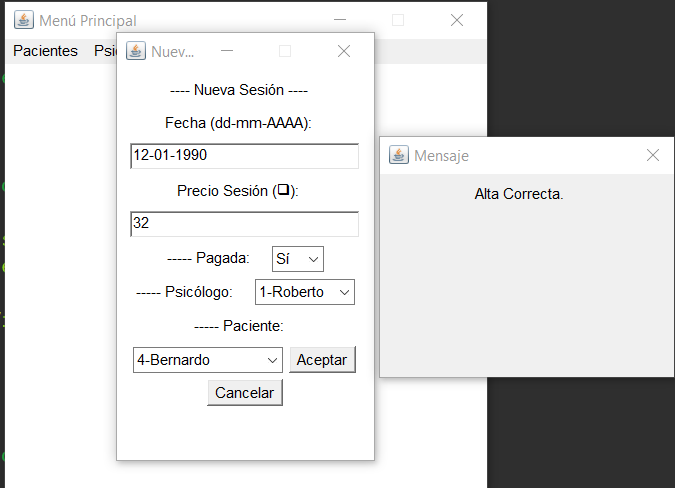

Para dar una sesión de alta, debemos pulsar en la opción 'Nuevo' que aparece en el menú Sesiones. Al pulsar, se abrirá la siguiente ventana.

Debemos rellenar los campos con la información de cada sesión. El programa no permite que ningún espacio quede en blanco. Si intentamos dar de alta una sesión con algún campo vacío, aparecerá un mensaje de error y no se introducirá la información. Para que la sesión se dé de alta correctamente, debemos introducir la información en un formato adecuado. Para dar de alta una sesión pulsamos 'Aceptar' una vez los campos estén rellenos. Si pulsamos 'Cancelar', se borrará la información escrita en los campos. En caso de éxito en el alta o en caso de error, aparecerá un mensaje indicándolo.
